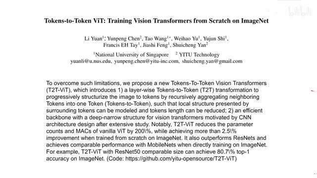
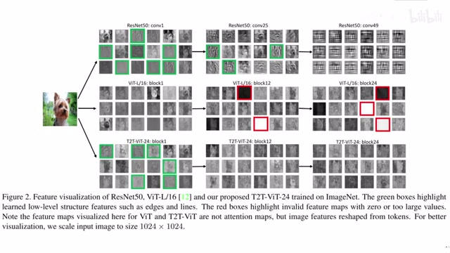
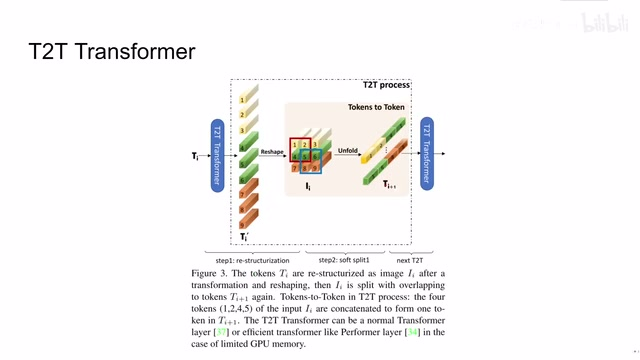
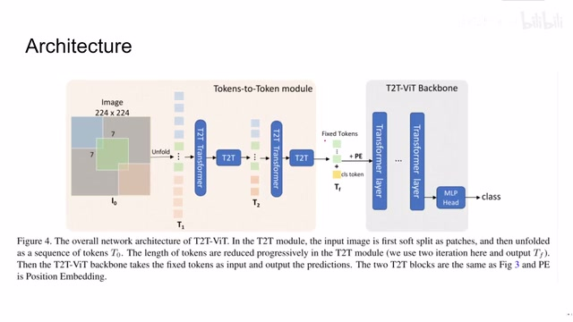
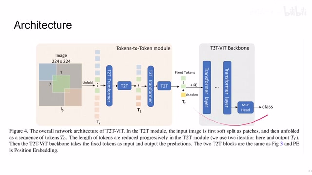
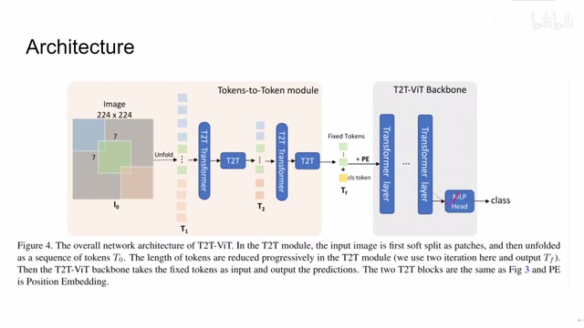
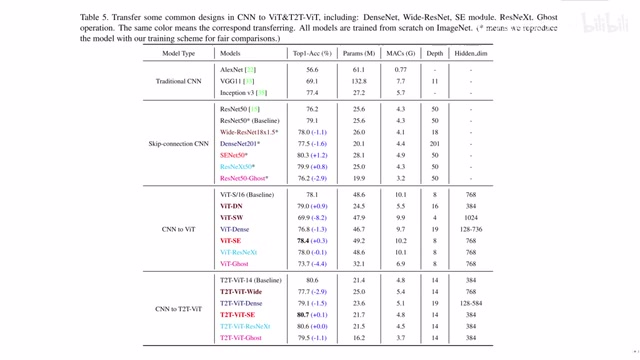

← 返回阅读库 · 原论文目录
论文讲解阅读文档 · 新模型 · v078
Tokens-to-Token ViT Training ViT from Scratch on ImageNet[2101.11986]
视频时长 00:04:15；讲解文字 1,924 字符；提取讲解画面 8 张。按视频原顺序阅读，每段文字保留时间戳。
文字来自整段视频的自动语音转写，按自然停顿分段，并与 PPT / 论文页面 / 演示画面对齐。未将讲解压缩为摘要；术语、数字和口述公式请结合画面及原论文核对。 阅读稿已校正规范部分明确术语误识别；原始逐字稿和每处修改记录另行保留。
讲解画面为源视频截图（640×360），不是可编辑 PPT 文件。全片按每秒 2 帧扫描内容变化，逐步展开页保留；连续动画保留代表画面。清晰度受源视频限制。
下载完整资料包 · 含离线 HTML、PDF、Word、全部 PPT 画面和字幕。
原论文与材料
Tokens-to-Token ViT: Training Vision Transformers from Scratch on ImageNet · 下载完整 PDF（10 页）
按时间阅读
00:00:00–00:00:27 · 画面 001

00:00:00–00:00:27 · 画面 001大家好,今天我们来快速说一篇论文 Tokens-to-Token Vision Transformer: Training Vision Transformers from Scratch on ImageNet 这篇论文是今年比较早 1 月份的时候的一篇论文它用的方法也不是说特别优雅特别是你如果已经熟悉了 Multi-Scale Vision Transformer 你大概能感受到这篇论文是怎么样启发了后面的工作然后包括一些小的结论在后面也被印证那么首先我们来看
00:00:27–00:01:07 · 画面 002

00:00:27–00:01:07 · 画面 002提上来的作者先说这个原来的 vision transformer 它的设计呢是相对比较粗糙的有的区块呢并不能够学到好的特征那像这种就是区块爆掉了那作者认为的主要还是就是说我的这个各个 token 之间他们的交流呢仅限于这个 transformer self-attention 这些里面在交流它呢其实就是模型不太灵活而且 Vision Transformer 是在 JFT-300M 上数据集上训练相当于是谷歌自己的数据集它实际的性能确实值得怀疑因此本文作者提出了说我使用一个 T2TToken to Token 的 Transformer 来强制的让我们邻近的 Token 之间相互互动这样子我们 Token 的数量会减少但是每个 Token 它的 Representation 它的长度会不断增加
00:01:07–00:02:02 · 画面 003

00:01:07–00:02:02 · 画面 003那么自主讯息进行怎么样实现呢我们看到假如说这里我们有几个 token 首先呢我们还是把它先还原成原来图像排布的样子这个步骤呢叫做 reshape 然后呢再做 unfold 就跟你做卷积一样拿一个滑窗把局部的 token 框起来然后这样划下去那每一个框呢就组成一个新的 token 在这个新的 token 里面呢把原来 token 呢他们的这个 feature 的 dimension 呢给它串接起来这个 feature 呢就是新的 token 的 feature 然后呢把这些东西
新的 token 呢扔到下一层就可以一层层处理下去了那显然你会注意到这样随着处理呢作者的占用的内存呢是越来越多的那我们看到作者提供的整个网络的结构啊在这里呢相对于传统的 Vision Transformer 在这里我们看到呢它主要是改了这个前面的 token embedding 这个地方或者叫 patch embedding 的地方首先呢你处理图像的方式不是直接那样没有重叠的就把它划分成比如说 10 个或者是 16x16 的各种块
00:02:02–00:02:46 · 画面 004

00:02:02–00:02:46 · 画面 004你呢是通过 unfold 也是通过一个类似卷积的方法呢，把这个一个 patch 给它滑过去，得到一个 token。中间再经过 reshape、soft split 这个操作，soft split 其实就是用 unfold。然后呢，你的 token 的数量变小了，但是每个 token 它的长度呢变深了这样子。呢最后处理出来的 token 呢，送到我们的 Vision Transformer 里面就可以了。我们在论文中的作者还测试了不同的这个 Vision Transformer Backbone
00:02:46–00:02:48 · 画面 005

00:02:46–00:02:48 · 画面 00500:02:48–00:02:53 · 画面 006

00:02:48–00:02:53 · 画面 006就是后面这个网络能够使用不同的结构来看的表现那么看到结果呢相当于那个时候才有的 CNN 在 SkipConnection 的 CNNVisionTransformer 加 Backbone 还有 T2T 加 VisionTransformer 加 Backbone 你看到本文提出的一系列方法呢是 outperform 实现的方法其中比较值得关注的呢就是这个 Wide 它的意思呢就是我正常设计一个网络的时候我是希望随着层数的增加网络结构呢是变得越窄但是越深
00:02:53–00:04:15 · 画面 007
00:02:53–00:04:15 · 画面 007窄的意思就是说每一个 layer 它的面积变小但是它的 feature dimension 很深就是每一个像素我有一个很长的 vector 去代表它而使用 wide 它的思路就是我要保持每个 channel 它相对的较浅但是每一个 layer 之后我会铺一个面积很大的 feature 是一个扁平的结构可以看到这种结构的设计是不如我们的 base line 也就是一个又窄又深的设计这个也很符合我们在 CNN 设计里面的直觉包括你在后面的 Multi-scale Vision Transformer 里面呢你也能理解为什么说他要把这个 token 的数量变小然后呢把这个 feature 的维度加深好了那么以上就是我对这篇论文的简单的分析当然是做了大量的省略如果你对这篇论文感兴趣想仔细的去查证的话还是非常推荐你去看原文设计的各种实验包括他测试的各种各样的 backbone 具体是什么样那么感谢您的收看再见
00:04:15–00:04:15 · 画面 008

00:04:15–00:04:15 · 画面 008转写与来源说明 · 0 个自动复核提示
保留 9 个原始语音片段，0 个片段触发自动复核提示。提示仅用于定位可能的术语、重复或识别问题，不等于已确认错误。
讲解画面为源视频截图（640×360），不是可编辑 PPT 文件。全片按每秒 2 帧扫描内容变化，逐步展开页保留；连续动画保留代表画面。清晰度受源视频限制。
原视频：paper/合集_2026-10-16_新模型/[论文简析]Tokens-to-Token ViT Training ViT from Scratch on ImageNet[2101.11986].mp4
SHA-256：2cd55ceec27ef00fce6bf05f921c5691c2d7eec13c599ce64dfd0c96d3a174de
全文按视频语音与画面制作。原论文可从上方链接下载；完整资料包保留全文、原始逐字稿、字幕和校对记录。